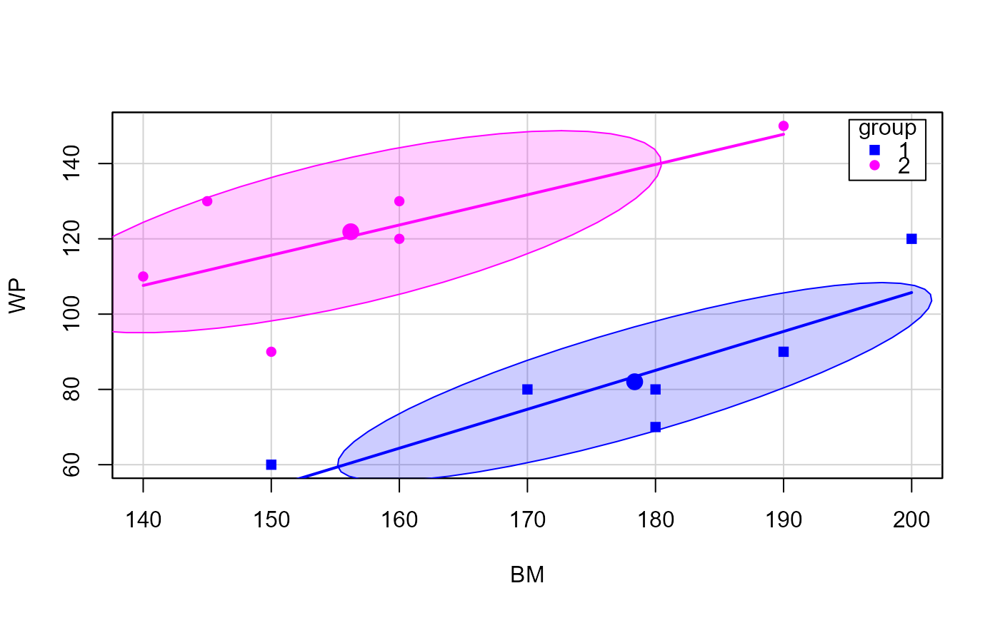
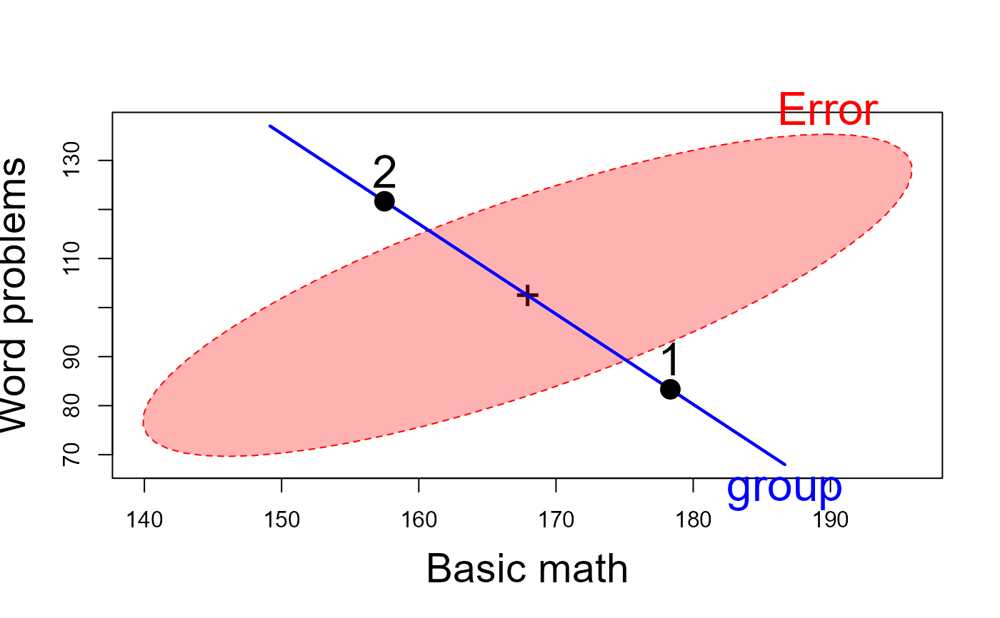

Scores for two groups of school children taught by different math teachers and tested for both basic math (BM) problems and solving word problems (WP).
Format
A data frame with 12 observations on the following 3 variables.
groupa factor with levels
12BMBasic Math score, a numeric vector
WPWord Problems score, a numeric vector
Examples
data(mathscore)
str(mathscore)
#> 'data.frame': 12 obs. of 3 variables:
#> $ group: Factor w/ 2 levels "1","2": 1 1 1 1 1 1 2 2 2 2 ...
#> $ BM : int 190 170 180 200 150 180 160 190 150 160 ...
#> $ WP : int 90 80 80 120 60 70 120 150 90 130 ...
math.mod <- lm(cbind(BM, WP) ~ group, data=mathscore)
car::Anova(math.mod)
#>
#> Type II MANOVA Tests: Pillai test statistic
#> Df test stat approx F num Df den Df Pr(>F)
#> group 1 0.86518 28.878 2 9 0.0001213 ***
#> ---
#> Signif. codes: 0 '***' 0.001 '**' 0.01 '*' 0.05 '.' 0.1 ' ' 1
# scatterplot with data ellipses
car::scatterplot(WP ~ BM | group, data=mathscore,
ellipse=list(levels=0.68), smooth=FALSE, pch=c(15,16),
legend=list(coords = "topright"))

# HE plot
heplot(math.mod, fill=TRUE,
cex=2, cex.lab=1.8,
xlab="Basic math", ylab="Word problems")
